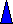

According to the Black-Scholes formula for option pricing, there are five main factors that affect an options price. Technically, dividends are a sixth factor but aren't of much concern, as they are generally factored into the price of the option, since all market participants know the amount of the dividend and when it will be paid. However, if it is a surprise dividend or dividend increase or cut, then it becomes a much more relevant factor.
According to the Black-Scholes model, the factors
are:
1) Stock price
2) Exercise or strike price
3) Interest rates (risk-free rate)
4) Volatility of the underlying stock
5) Time to expiration
6) Dividends
We will look at each of these in turn and see exactly the effects they have on calls and puts. Some will be fairly intuitive and others not but all are important if you really want to understand options.
The stock price is probably the most obvious of all the factors that affect an option's price. This is simply due to the fact that the option's price is derived from the underlying stock -- hence the name derivative instrument.
As the stock price increases, the price of a call will increase and the price of the put will decrease with all other factors constant.
This is a theoretical statement, so do not be alarmed if your call option is not up with the underlying stock trading higher. In fact, anybody who has traded options for any length of time has experienced this. There are sound reasons why this happens, so let's see if we can make sense of it.
First of all, there are many strikes for any given option. In fact, new strikes will be added if the stock is moving, either up or down, significantly. If a stock is trading at $120 up $2, a $100 strike will likely be up a significant portion of that $2 -- maybe up $1-1/2 or so -- depending on the volatility and time remaining on the option.
What about a $150 strike? Here, it is difficult to say. We know it is worth more theoretically, but it is up to the market to determine just how much. As an analogy, say you are betting on a runner to complete a twenty-six mile marathon and the runner has just taken the first step across the start line. Do you adjust your bet upward? Probably not, even though, theoretically, the runner is closer to the finish line than he was one step earlier. From a theoretical viewpoint, you should be a little more confident on your bet that he will complete it. It does not mean you will adjust your bet.
This holds for the options, too. An option can be thought of as a bet that the stock will cross the finish line -- the strike -- by expiration. As the stock moves higher, all calls become worth more theoretically. Whether or not the market reflects added value remains to be seen.
This same reasoning holds for puts, but in the opposite direction. Because a put option confers the right to sell stock, it should be worth more as the stock moves lower. As the stock falls, all puts become worth more theoretically.
The exercise price is closely related to the stock price. In fact, they are really just two ways of looking at the same thing. When we were considering the stock price above, we assumed the strike price remained constant (as well as all other factors). Now, if we hold the stock price constant but lower the strike, effectively we are doing the same thing; that is, in either case we are putting the call option more in-the-money or at least in that direction.
As the exercise price (strike price) is decreased, calls become worth more and puts less with all other factors constant.
By the same reasoning, as the exercise price is raised, puts become worth more and calls will be worth less.
Another way to understand this is by thinking of what a call does. It gives you the right to purchase stock. Now, would you rather buy stock for $100 per share or $120 per share? Of course, you'd rather pay $100 and so would everybody else in the market, so market participants correspondingly bid the $100 strike higher, which is just a reflection of the higher demand.
Similarly, a put option gives you the right to sell your stock. Because everybody would rather get $120 per share, investors bid the $120 put higher than the $100 strike.
How interest rates affect calls and puts are a little more difficult to understand. It may be helpful to think about the following analogy. Calls are a form of borrowing money. Although you pay for the call option, in effect you are borrowing funds. Here's why: Say you buy a one-year $100 strike. You control all stock prices above $100 for the next year but are not obligated to pay him until one year from now. So effectively you are borrowing money from the call writer. Because interest rates affect the cost of carry to the seller:
An increase in interest rates will increase the price of a call option and decrease the price of a put option with all other factors constant.
Although this is fairly easy to show mathematically, it is easier to remember if you understand it conceptually. So let's look at another line of reasoning.
Say interest rates are very high -- 20%. You have $100,000 in the money-market that you would like to invest in stocks. You can either buy the stocks today, or for a fee, buy a call option which gives you control of the stock but allows you to defer payment. The choice should be clear: buy the call option so you can hang on to your money and continue to earn interest. The markets follow this same line of reasoning and bid the calls higher.
What about the puts? Puts give you the right to sell your stock, which represents a cash flow into the account, which is nice to have if interest rates are really high. So do you elect to buy puts to defer the sale? No, in fact, you may even sell the puts to generate cash into the account so it can earn the high rate of interest. Because few of the market participants are willing to buy puts relative to those wanting to sell them, the price of puts will fall.
There is one thing to be careful with here. All of these factors we are discussing assume the other factors remain constant. In the real world, this is rarely the case. So if interest rates rise suddenly, do not be surprised if your call options decrease in price and don't increase as we have said so far. This is usually due to the fact that stock prices will fall with increases in interest rates. We know that falling stock prices correspond with falling call prices. But it should be evident that all factors did not stay the same in this case -- we assumed interest rates rose and stock prices fell.
Without a doubt, volatility is the single-most important factor of the Black-Scholes model. In fact, it is the only true unknown in the equation. For example, if you asked 10 different people what the stock price is, they would all give you exactly the same answer. Likewise, they would quote the same strike price, risk-free rates of interest, and time remaining on the option. However, what should they tell you is the correct volatility measure for the stock? The 10-day average? The 20-day? The 50-day? Or should they quote the projected expected future volatility? It should be easy to see why this is the most important factor in the model -- it is the only one that nobody knows for sure.
If volatility increases, both call and put prices will increase with all other factors the same.
Now, you may be thinking if volatility increases, the stock becomes riskier. Why would somebody pay more for a risky asset? After all, junk bonds trade for lower prices than government bonds because of the risk.
The reason for the apparent contradiction is that options have a limited downside; the owner can only lose what they put into it.
Look at the following diagram. Assume one investor buys stock at $50 and another purchases a $50 call for $5:
|
30 |
35 |
40 |
45 |
50 |
55 |
60 |
65 |
70 |
75 |
|
|
Gain on stock purchased at $50 |
-20 |
-15 |
-10 |
-5 |
0 |
5 |
10 |
15 |
20 |
25 |
|
Intrinsic gain on $50 call purchased at $5 |
-5 |
-5 |
-5 |
-5 |
-5 |
5 |
10 |
15 |
20 |
25 |
If you purchased stock at $50 and the stock closes at $30, you are down $20. However, the call owner is only down $5. In fact, that's the most the call owner can lose; however, they can match the stock purchaser on profit for all stock prices above $50. So more volatility just means a higher expected return for the option buyer -- whether calls or puts. So investors will bid up the prices of options that are tied to risky stocks.
This factor is fairly straightforward. We said earlier that an option could be viewed as a bet that the stock will be above the strike price (for calls) or below the strike price (for puts) by expiration. In other words, you are in effect betting that the option will have intrinsic value. Because of this, the more time available, the more likely the stock will have intrinsic value.
The more time to expiration, the more valuable are calls and puts.
From a trading standpoint, the more time you buy, the better. This is because calls and puts become increasingly cheaper (on a per month basis) the more time you buy. For example, if a one-month option is trading for $5, you would have to look at a four-month option to double the price to $10. Many people think that a two-month option would double the price but it doesn't -- it takes four times the amount of time to double the price. So the implication is that it becomes a better and better deal for the option buyer to buy time. Likewise, it becomes a worse and worse deal for the options seller to sell longer-term options.
Please don't confuse this to mean that it is wrong to sell longer-term options or that it's wrong to buy little time because that's not necessarily true. It depends on many factors with the particular strategy at hand. All that is being said is that, everything else constant, option buyers should buy lots of time and option sellers should sell short amounts of time.
| Special note: There is one small point that should be made here. It is possible for a deep-in-the-money European put option to become more valuable with the passage of time. This is due to the fact that the European option holder must wait to receive the cash from the put. So a deep-in-the-money European put will be worth the present value of the future cash flow and will increase in price with the passage of time. However, options on the equity market (stocks) are always American style so this caveat doesn't hold for most of our discussions on equity trading strategies. Just be aware that there is one exception to this rule. |
Last, we will consider the effect of dividends on calls and puts. This one is also fairly straightforward.
If a stock pays a dividend, the price of the stock is reduced by the amount of the dividend (rounded to the nearest 1/8th of a point) the next trading session. The reason the price is reduced is because the company has paid out cash -- one of its assets -- so is now worth less than before it paid the dividend. For example, say a $100 stock will pay a $1 dividend tomorrow. On the opening, the stock will be trading for $99 unchanged (this is considered to be unchanged since the fall is not due to supply and demand factors).
Think about it for a moment. If the stock price is down and all other factors stay the same, what will happen to the call? You've got it, the call price will fall.
Dividend increases cause call prices to fall and put prices to rise with all other factors the same.
Why will put prices rise? Because the put owner can force the seller to buy the stock, which is now worth even less after the dividend is paid, so the put options become more valuable.
The following table will help as a recap. The table shows the effect on call and put prices with the six factors being up. Of course, the reverse will be true if the factors are down.
|
If this factor is up: |
Call price |
Put price |
|
|
1 |
Stock price |
 |
|
|
2 |
Exercise price |
|
|
|
3 |
Risk-free rates |
|
|
|
4 |
Volatility |
|
|
|
5 |
Time to expiration |
|
|
|
6 |
Dividends |
|
Most strategies are some form of a play on the five main factors that affect option prices. If you understanding these factors, you are on your way to becoming a better options trader! |